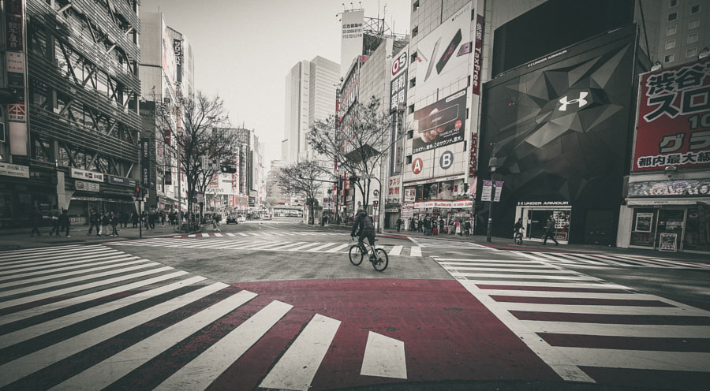

Scopul portretului este să ne transmită starea și detalii despre personalitatea subiectului.
Fotografiile de peisaj reprezintă capturarea unui loc prin ochii fotografului.

Spre deosebire de celelalte categorii, fotografie de stradă (urbană) este axată pe reprezentarea cotidianului într-un mod diferit de cel cunoscut de restul oamenilor.